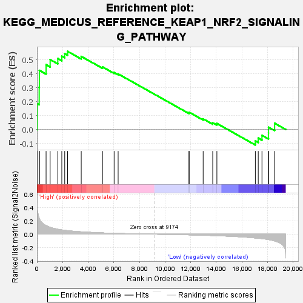
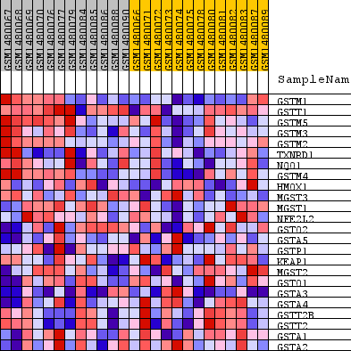
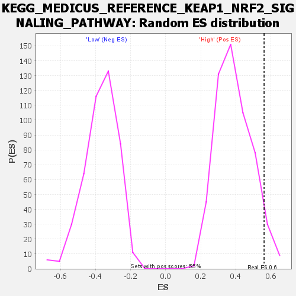

| Dataset | WG6v3.MRPL3.cls#High_versus_Low.MRPL3.cls#High_versus_Low_repos |
| Phenotype | MRPL3.cls#High_versus_Low_repos |
| Upregulated in class | High |
| GeneSet | KEGG_MEDICUS_REFERENCE_KEAP1_NRF2_SIGNALING_PATHWAY |
| Enrichment Score (ES) | 0.5615024 |
| Normalized Enrichment Score (NES) | 1.4359803 |
| Nominal p-value | 0.054446463 |
| FDR q-value | 0.5392845 |
| FWER p-Value | 0.999 |

| SYMBOL | TITLE | RANK IN GENE LIST | RANK METRIC SCORE | RUNNING ES | CORE ENRICHMENT | |
|---|---|---|---|---|---|---|
| 1 | GSTM1 | GSTM1 | 30 | 0.356 | 0.1849 | Yes |
| 2 | GSTT1 | GSTT1 | 173 | 0.240 | 0.3033 | Yes |
| 3 | GSTM5 | GSTM5 | 187 | 0.234 | 0.4251 | Yes |
| 4 | GSTM3 | GSTM3 | 712 | 0.128 | 0.4651 | Yes |
| 5 | GSTM2 | GSTM2 | 1029 | 0.102 | 0.5021 | Yes |
| 6 | TXNRD1 | TXNRD1 | 1628 | 0.074 | 0.5098 | Yes |
| 7 | NQO1 | NQO1 | 1939 | 0.064 | 0.5271 | Yes |
| 8 | GSTM4 | GSTM4 | 2166 | 0.058 | 0.5457 | Yes |
| 9 | HMOX1 | HMOX1 | 2391 | 0.052 | 0.5615 | Yes |
| 10 | MGST3 | MGST3 | 3457 | 0.035 | 0.5251 | No |
| 11 | MGST1 | MGST1 | 5118 | 0.019 | 0.4494 | No |
| 12 | NFE2L2 | NFE2L2 | 6024 | 0.013 | 0.4096 | No |
| 13 | GSTO2 | GSTO2 | 6339 | 0.011 | 0.3993 | No |
| 14 | GSTA5 | GSTA5 | 11869 | -0.010 | 0.1195 | No |
| 15 | GSTP1 | GSTP1 | 11884 | -0.010 | 0.1240 | No |
| 16 | KEAP1 | KEAP1 | 12976 | -0.016 | 0.0760 | No |
| 17 | MGST2 | MGST2 | 13723 | -0.020 | 0.0481 | No |
| 18 | GSTO1 | GSTO1 | 14048 | -0.022 | 0.0432 | No |
| 19 | GSTA3 | GSTA3 | 17051 | -0.056 | -0.0820 | No |
| 20 | GSTA4 | GSTA4 | 17278 | -0.061 | -0.0619 | No |
| 21 | GSTT2B | GSTT2B | 17568 | -0.066 | -0.0421 | No |
| 22 | GSTT2 | GSTT2 | 18079 | -0.081 | -0.0261 | No |
| 23 | GSTA1 | GSTA1 | 18082 | -0.081 | 0.0161 | No |
| 24 | GSTA2 | GSTA2 | 18557 | -0.101 | 0.0446 | No |

